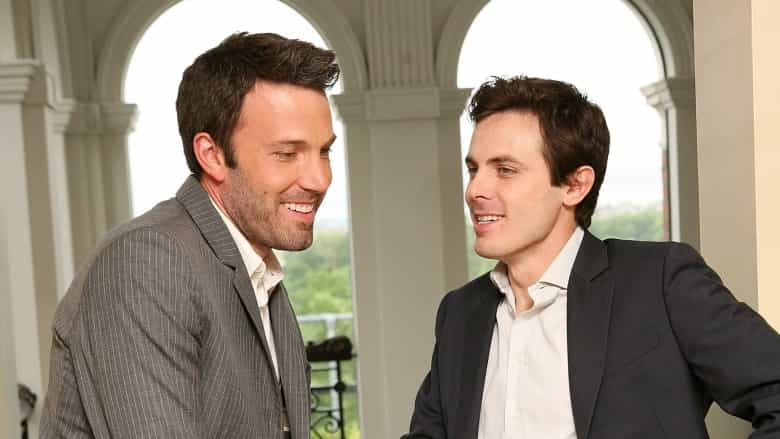

< < < Back
Feminists Want To Deprive Casey Affleck Of An Oscar Because Evidence Is For Misogynists – Return Of Kings
By Hollywood standards, Manchester by the Sea is a spectacular film. The lead, Casey Affleck, gives a spellbinding performance as a tortured man who returns to his hometown after the death of his brother. He had previously fled Manchester-by-the-Sea after his now ex-wife accused him of being involved in the deaths of their three children in a house fire. Affleck’s character Lee seeks to navigate a complex relationship with his grieving nephew, for whom he has been awarded guardianship, all while dealing with the memories of being falsely accused of murder.
Though he won a Golden Globe for Best Actor recently, Casey Affleck’s chances of winning the Academy Award are possibly very slim thanks to a lawsuit settled with two women. Two female employees on the set of 2010’s I’m Still Here, which Affleck directed, claim he sexually harassed them. As would be expected, the lawsuit was settled out of court for a presumably exorbitant sum. Any male actor would recognize the deleterious publicity arising from allegations of sexual misconduct in the age of “rape culture.” In addition, Casey Affleck was not charged by the police because any charges, let alone a conviction, might have required the perusal and testing of actual evidence.
After Affleck triumphed at the Golden Globes, a series of virtue-signalers came out of the woodwork. Chief among them was Constance Wu, an Asian actress whose obsession with gender and diversity quotas seems more aimed at her own bank balance than “change” you could call necessary and needed. She called Affleck a “sexual deviant.” A series of reports laudatory of Wu, whom people called “brave,” were then issued by media outlets. The Sydney Morning Herald was one of many newspapers that tried to conflate the unfounded allegations against Casey Affleck with the proven pedophilia and rape of Roman Polanski. Such was the bitterness over a man getting an award after never being convicted of a crime.
Here’s some of Constance Wu’s groundbreaking reporting on the matter:
And if she loses her job, she can always go back to her pet claims of gender and racial discrimination:
Why the persecution of Casey Affleck might be good for improving Hollywood

By not singling out his brother, even if the allegations are bogus, Ben Affleck has ruled himself out of attacking other stars accused of sexual harassment, assault, or rape.
As demonstrated in some of his recent media appearances, particularly a diatribe in defense of Islam he made on Real Time with Bill Maher, Affleck’s brother Ben is a key member of Hollywood’s SJW brigades. And when the Hollywood star brother of a man accused of sexual assault, however tenuous the allegations may be, fails to comment on the saga, we should take note. We now have a precedent for the next time a well-known actor is hounded for purported sexual impropriety, whether he has family connections in show business or not.
Of course, perhaps Casey Affleck is partially getting protection because he is Ben Affleck’s brother and has other major entanglements within Hollywood (his ex-partner is the sister of Joaquin Phoenix). Yet it doesn’t really matter. There is no evidence available to us to suggest that Affleck did what cinematographer Magdalena Gorka and producer Amanda White claim. Plus, as everyone from Ben Affleck to George Clooney to Meryl Streep are saying nothing negative about the issue, commonsense commentators have a new weapon for the next time a man is chased by money-hungry women looking for a small (or large) fortune: “You presumed Casey Affleck’s innocence, so why not this guy’s?”
Casey Affleck probably won’t get the Oscar but his ordeal shows men can triumph over spurious allegations
Magdalena Gorka and Amanda White should never have received money, but Casey Affleck had no choice.
With the “racist Oscars” controversy still fresh from last year, fellow contenders like Denzel Washington’s Fences already threatened to steal Casey Affleck’s thunder. The dubious claims of Magdalena Gorka and Amanda White, enabled by a man-hating media and certain C-grade celebrities, only add to the hurdles Affleck will face in winning the Oscar for Best Actor.
In the meantime, I recommend Manchester by the Sea to everyone. The way Affleck’s character Lee deals with his self-pitying, vindictive ex-wife, for example, is a sight to behold. By no means a comedy, the film nevertheless possesses a deep irony you rarely find in modern, cucked cinema.
In many respects, the way Casey Affleck has dealt with the sexual harassment allegations against him is similar to the way the man he portrays in Manchester by the Sea deals with his tragedies. Others may hurt you for a while, but you can still keep on living, all on your own terms.
Read More: Will Smith’s Revolt Against The Oscars Shows That Leftist Celebrity Solidarity Is Crumbling